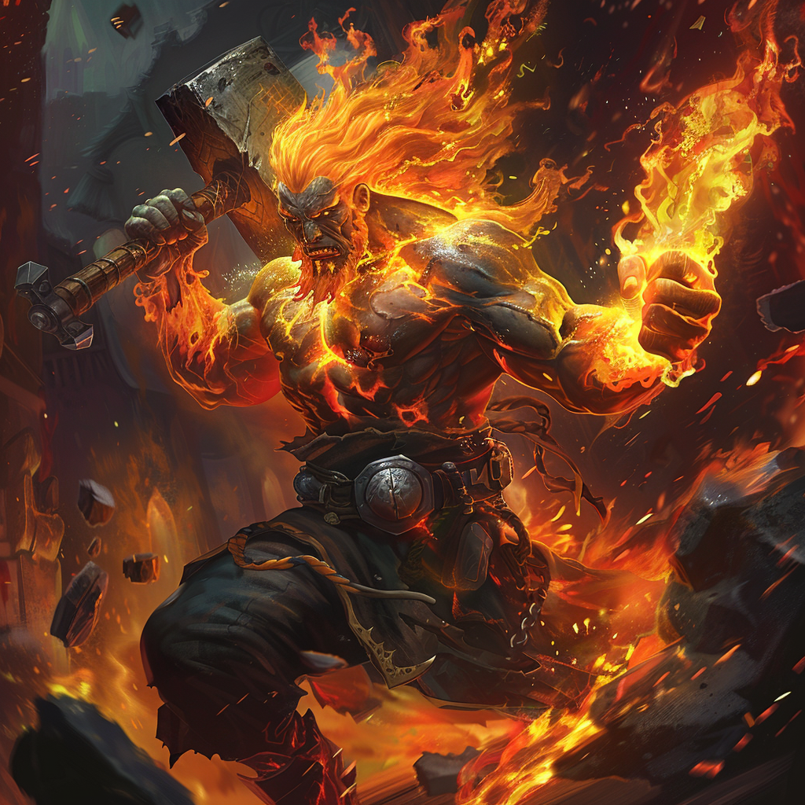

Domains
Fire, Craftsmanship, and Innovation
Appearance
Vulcanus is a mighty smith, his skin gleaming with the glow of molten metal, and his hair ablaze like flames. He wields a massive hammer and anvil, shaping the world with his fiery craftsmanship.
Ascension
In the heart of Mythara, where the earth’s molten core churned with relentless fury, there lived a blacksmith of unmatched skill and ambition. His name was Vulcanus, and his forge was a place of legend, where the very elements themselves danced to his command.
From a young age, Vulcanus had shown a talent for the art of metallurgy, his hands deftly shaping molten metal into works of timeless beauty and unparalleled strength. But it was not mere craftsmanship that drove him—it was his burning desire to reshape the world itself, to bend the elements to his will and forge a new destiny for all who dwelled upon the earth.
And so, on the eve of a great cataclysm that threatened to consume the world in flames, Vulcanus stood before his blazing forge, his hammer raised high and his spirit aflame with determination. In a whirlwind of searing heat and divine energy, he called upon the very essence of creation itself, shaping the raw power of the elements into a vessel of transcendent power.
With a mighty roar that echoed through the heavens, Vulcanus ascended to the skies, his mortal form transformed into a being of pure flame and divine energy. As the god of the forge and the flames, he became the architect of creation and the guardian of the eternal flame, his presence a beacon of inspiration and innovation to all who sought to shape the world around them.
And though he had once been a mortal blacksmith, Vulcanus’s ascension was a testament to the indomitable spirit of the human soul and the boundless power of creation itself. As he soared among the stars, his fiery gaze casting a radiant glow upon the world below, he knew that his journey had only just begun, his destiny forever entwined with the eternal dance of the cosmos.